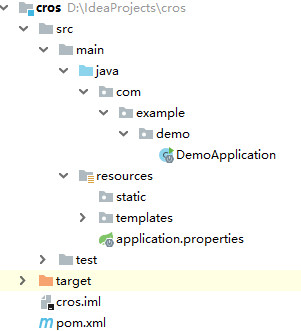
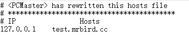
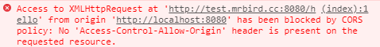
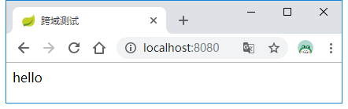

HTML 5中新增的跨域资源访问（Cross-Origin Resource Sharing）特性可以让我们在开发后端系统的时候决定资源是否允许被跨域访问。所谓跨域指的是域名不同或者端口不同或者协议不同，比如当从mrbrid.cc网站访问mrbird.cc:8080网站资源就会存在跨域问题。Spring从4.2版本开始就提供了跨域的支持，开箱即用。这里介绍如何在Spring Boot开发中解决跨域的问题，主要分为注解驱动和接口编程的方式。
模拟跨域
要解决跨域问题，我们就得先模拟一个跨域情景。新建Spring Boot项目，版本为2.1.0.RELEASE，并引如下依赖：
1 | <dependency> |
项目结构如下所示：

在com.example.demo路径下新建controller包，并创建TestController：
1 |
|
然后在resources/templates下新建index.html：
1 |
|
编辑本地hosts文件，将http://test.mrbird.cc网址映射到127.0.0.1上：

启动项目访问http://localhost:8080/，会发现页面并没有成功显示hello，并且F12观察浏览器控制台会发现其报错了：

这是因为我们在http://localhost:8080/域名下试图访问http://test.mrbird.cc:8080下的hello接口，这就存在跨域问题，接下来我们来解决这个问题。
注解驱动
Spring 4.2后提供了@CrossOrigin注解，该注解可以标注于方法或者类上，包含了以下属性:
| 属性 | 含义 |
|---|---|
| value | 指定所支持域的集合，*表示所有域都支持，默认值为*。这些值对应HTTP请求头中的Access-Control-Allow-Origin |
| origins | 同value |
| allowedHeaders | 允许请求头中的header，默认都支持 |
| exposedHeaders | 响应头中允许访问的header，默认为空 |
| methods | 支持请求的方法，比如GET，POST，PUT等，默认和Controller中的方法上标注的一致。 |
| allowCredentials | 是否允许cookie随请求发送，使用时必须指定具体的域 |
| maxAge | 预请求的结果的有效期，默认30分钟 |
我们来改造TestController中的hello方法：
1 | ("hello") |
表示允许所有域都支持，重启项目，再次访问http://localhost:8080/：

接口编程
除了使用@CrossOrigin注解外，我们可以使用接口编程的方式进行统一配置。
在com.example.demo路径下新建config包，然后创建WebConfigurer，实现WebMvcConfigurer，重写addCorsMappings默认实现：
1 |
|
上面配置表示允许所有请求支持跨域访问，并且不限定域，但是支持持GET方法。将hello方法上的@CrossOrigin注解注释掉，重启项目，再次访问http://localhost:8080/，结果也是OK的。
过滤器实现
查看官方文档，发现其还提供了基于过滤器的实现方式：
1 |
|
Actuator跨域
如果项目里集成了Actuator相关功能，其暴露的接口也支持跨域，只需要在配置文件中添加如下配置即可：
ENDPOINTS CORS CONFIGURATION (CorsEndpointProperties)
1 | management.endpoints.web.cors.allow-credentials= # Whether credentials are supported. When not set, credentials are not supported. |
源码链接：https://github.com/wuyouzhuguli/SpringAll/tree/master/48.Spring-Boot-CORS-Support